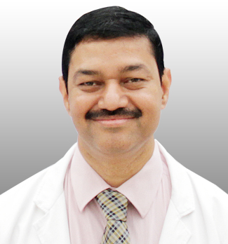

Dr. S. Rajasekaran
M.S, DNB, F.R.C.S.(Ed), M.Ch(Liv), F.A.C.S, F.R.C.S.(Eng), Ph.D
Dr Rajasekaran has been instrumental in building and shaping the orthopaedic department into a very busy clinical unit with strong academic and research components. He had a brilliant academic career and was the ‘Best outgoing student’ of Coimbatore Medical College and stood first in the University of Madras in the orthopaedic post-graduate examinations. He was awarded the Khazenifer Gold Medal and Norman Roberts Medal for best performance during his M.Ch exams in Liverpool, UK. He completed his Ph.D in 2000. He has special interest in spine surgery, arthroplasty and clinical research in major trauma. He has led the unit’s basic science research in spinal deformities, disc nutrition and biology and genetics of disc degeneration which have been recognised with numerous awards and published in international journals.He was also instrumental in the evolution of ‘Bose Hospital Open Injury Severity Score’ which guides critical decisions in saving and reconstructing severely injured limbs.
He is an adjunct professor of The Tamilnadu Dr MGR Medical University, and was awarded the Hunterian Professor, Royal College of Surgeons of England, 2011 – 12. He is also the Past President of Indian Orthopaedic Associationl President, Association of Spine Surgeons of India, ISSLS, Canada and the Tamilnadu Orthopaedic Association. He is also the Chief Editor of ASSI Textbook of Spinal Infections & Trauma and the Ganga Video Atlas of Spine Surgery. He is the editor of European Spine Journal (Executive Editorial Board Member) and Spine journal (Deputy Editor). He is also the reviewer of many scientific journals like Journal of Bone and Joint Surgery (B), INJURY Journal, UK, Journal of Orthopaedic Surgery, Hong Kong, Journal of Orthopaedic Science, Japan and the Indian Journal of Orthopaedics.
Team
Team

Dr. J. Dheenadhayalan
MS Ortho
Dr. J. Dheenadhayalan
MS Ortho
Dr. J. Dheenadhayalan joined the department in 1992 after basic training at Mysore Medical College. He had his advanced training at Nuffield orthopaedic center and Milton Keynes general hospital UK, and fellowship training in joint replacement at Tubingen and Regensberg Germany. A Founder member of the APOA trauma section and holds member position in AO Trauma and Shoulder society of India. Presently he is the Editorial Secretary of Journal of Tamilnadu orthopaedic association and Assistant Editor to Indian Journal of Orthopaedics. His field of interest is shoulder surgery, Limb reconstruction and surgery in complex trauma situations.
Dr Ajoy Shetty is the senior consultant in spine surgery in the department of orthopaedics. He joined the department in 1994 and became a consultant in 2000. After initial training in Orthopaedics at Bangalore Medical College, he had advanced training in Spine Surgery at The Queen Elizabeth Hospital, Adelaide, Australia. He was the Organising Secretary for the APOA Operative Spine Course in 2007. He is a regular faculty at AO Spine Courses and was awarded the ISSLS International Fellowship for the year 2007. He is also the co-author of the scientific papers which won the ISSLS Prize 2004 and EuroSpine Award 2008. He has special interests in complex paediatric and adult spinal deformities.